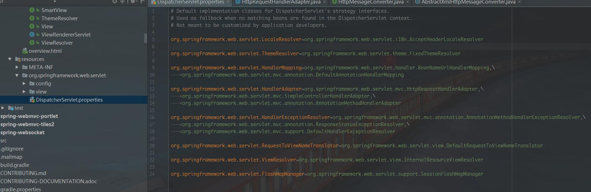

@Override @Bean public RequestMappingHandlerAdapter requestMappingHandlerAdapter(){ // Create or let "super" create the adapter // Then customize one of its properties } }
/** * Strategy interface that specifies a converter that can convert from and to HTTP requests and responses. * * @author Arjen Poutsma * @author Juergen Hoeller * @since 3.0 */ publicinterfaceHttpMessageConverter<T> {
/** * Indicates whether the given class can be read by this converter. * @param clazz the class to test for readability * @param mediaType the media type to read, can be {@code null} if not specified. * Typically the value of a {@code Content-Type} header. * @return {@code true} if readable; {@code false} otherwise */ booleancanRead(Class<?> clazz, MediaType mediaType);
/** * Indicates whether the given class can be written by this converter. * @param clazz the class to test for writability * @param mediaType the media type to write, can be {@code null} if not specified. * Typically the value of an {@code Accept} header. * @return {@code true} if writable; {@code false} otherwise */ booleancanWrite(Class<?> clazz, MediaType mediaType);
/** * Return the list of {@link MediaType} objects supported by this converter. * @return the list of supported media types */ List<MediaType> getSupportedMediaTypes();
/** * Read an object of the given type form the given input message, and returns it. * @param clazz the type of object to return. This type must have previously been passed to the * {@link #canRead canRead} method of this interface, which must have returned {@code true}. * @param inputMessage the HTTP input message to read from * @return the converted object * @throws IOException in case of I/O errors * @throws HttpMessageNotReadableException in case of conversion errors */ T read(Class<? extends T> clazz, HttpInputMessage inputMessage) throws IOException, HttpMessageNotReadableException;
/** * Write an given object to the given output message. * @param t the object to write to the output message. The type of this object must have previously been * passed to the {@link #canWrite canWrite} method of this interface, which must have returned {@code true}. * @param contentType the content type to use when writing. May be {@code null} to indicate that the * default content type of the converter must be used. If not {@code null}, this media type must have * previously been passed to the {@link #canWrite canWrite} method of this interface, which must have * returned {@code true}. * @param outputMessage the message to write to * @throws IOException in case of I/O errors * @throws HttpMessageNotWritableException in case of conversion errors */ voidwrite(T t, MediaType contentType, HttpOutputMessage outputMessage) throws IOException, HttpMessageNotWritableException;
The default implementation uses the “DispatcherServlet.properties” file (in the same package as the DispatcherServlet class) to determine the class names.

Spring 4.3.2 中有一个实现了HandlerAdapter接口的类会被扫描到，这个类叫做RequestMappingHandlerAdapter
RequestMappingHandlerAdapter
这个类在构造的时候就加载了许多messageConverter
1 2 3 4 5 6 7 8 9 10
publicRequestMappingHandlerAdapter(){ StringHttpMessageConverter stringHttpMessageConverter = new StringHttpMessageConverter(); stringHttpMessageConverter.setWriteAcceptCharset(false); // see SPR-7316
/** * Return the list of argument resolvers to use including built-in resolvers * and custom resolvers provided via {@link #setCustomArgumentResolvers}. */ private List<HandlerMethodArgumentResolver> getDefaultArgumentResolvers(){ List<HandlerMethodArgumentResolver> resolvers = new ArrayList<HandlerMethodArgumentResolver>();
/** * Writes the given return value to the given web request. Delegates to * {@link #writeWithMessageConverters(Object, MethodParameter, ServletServerHttpRequest, ServletServerHttpResponse)} */ protected <T> voidwriteWithMessageConverters(T returnValue, MethodParameter returnType, NativeWebRequest webRequest) throws IOException, HttpMediaTypeNotAcceptableException, HttpMessageNotWritableException {
/** * Writes the given return type to the given output message. * @param returnValue the value to write to the output message * @param returnType the type of the value * @param inputMessage the input messages. Used to inspect the {@code Accept} header. * @param outputMessage the output message to write to * @throws IOException thrown in case of I/O errors * @throws HttpMediaTypeNotAcceptableException thrown when the conditions indicated by {@code Accept} header on * the request cannot be met by the message converters */ @SuppressWarnings("unchecked") protected <T> voidwriteWithMessageConverters(T returnValue, MethodParameter returnType, ServletServerHttpRequest inputMessage, ServletServerHttpResponse outputMessage) throws IOException, HttpMediaTypeNotAcceptableException, HttpMessageNotWritableException {